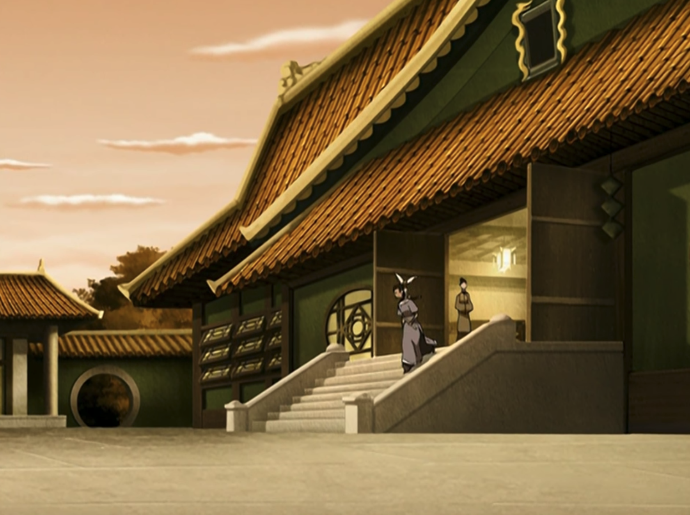

About Uncle Iroh
Brother of the Fire Lord Ozai and pretty much a renegade ever since he decided to follow his nephew Zuko in his quest to hunt down the Avatar and regain his honor, the Dragon of the West went through some main transformations. One thing is true, though: the adversities didn't stop him from following his dreams and becoming the proud owner of the Jasmine Dragon, the best tea shop in Ba Sing Se!
Jasmine Dragon, the best tea shop in Ba Sing Se!
Iroh's Characteristics:
- Charismatic
- Wise
- Balanced
- Funny
- Easygoing
- Reliable
Iroh's Friends
Since Iroh's not afraid of any dangers, he has quite an unusual list of friends. You can check more about them below: